Cervical Cancer Screening
- Ontario switched to primary HPV screening in March 2025. The sample is still taken the same way; what the lab does with it changed. Cytology is now only done if high-risk HPV is found.
- Screen from age 25, then every 5 years if HPV-negative — up from every 3 years with cytology. Only asymptomatic, ever sexually active people with a cervix.
- HPV causes virtually all cervical cancer. Low-risk (6, 11) → warts and LSIL only. High-risk (16, 18, 31/33, 45) → LSIL or HSIL, and cancer.
- The one-way rule: low-risk HPV can produce LSIL but never HSIL and never cancer. High-risk HPV can produce either. So an LSIL result alone does not tell you which type caused it.
- Cervical cancer is ideal to screen for: well-understood natural history, a detectable precursor, and a slow progression (10+ years) — so even a false negative gets caught at the next round.
- Gardasil 9 is the current vaccine, given in grade 7 in Ontario. One dose ages 9–20, two from 21, three if immunocompromised.
- Vaccinated people still get screened. The vaccine does not cover every high-risk type.
- Why the switch: HPV testing is more sensitive, detects earlier, and has a very high negative predictive value. Its weakness is a lower positive predictive value — which is exactly why cytology is kept as the triage test.
Learning Objectives
- Describe the natural history and epidemiology of cervical cancer.
- Explain the role of HPV and the impact of vaccination on cervical cancer and screening.
- Know the eligibility for cervical screening and how samples are collected and evaluated.
- Summarize the rationale for the shift from cytology-based screening to primary HPV screening.
- Identify key cytology outcomes and the role of cytology in an HPV-based screening programme.
- Recognize the potential of cervical self-sampling.
Dr. Cady Zeman, cytopathologist at London Health Sciences Centre. 39 minutes. She opens by flagging that the landscape is changing fast and this recording was made in summer 2025 — which is unusually honest and worth respecting when you read the numbers below.
Natural History
Why this cancer, of all cancers, is the one we screen best.
HPV → SIL → Cancer
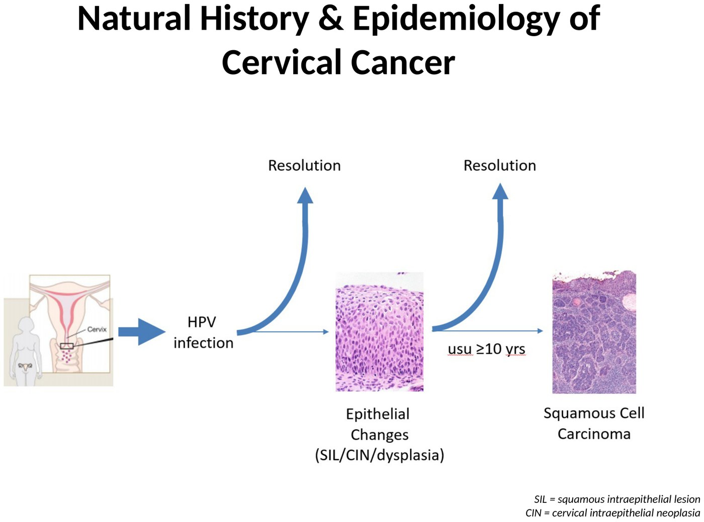
Terminology, all meaning the same thing: SIL (current) · CIN · dysplasia. Different eras, same epithelial changes.
1. The natural history is very well understood.
2. We can screen for precursors, not just the invasive cancer.
3. Progression is slow.
Point 3 does the heavy lifting: because it takes 10+ years, a false negative on one round gets caught on the next — as long as screening happens at regular intervals. Screening is not a once-and-for-all event.
Epidemiology
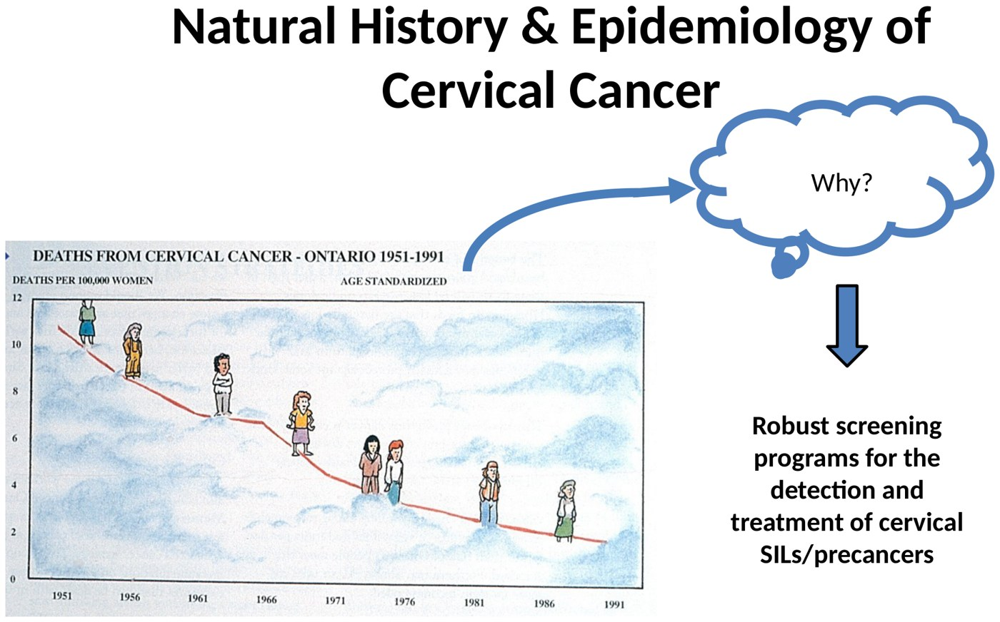
Canada, 1950s→1990s. Cervical cancer went from a leading cause of cancer death in women to a steadily falling one — because of screening programmes catching precursors. Further recent falls also reflect vaccination.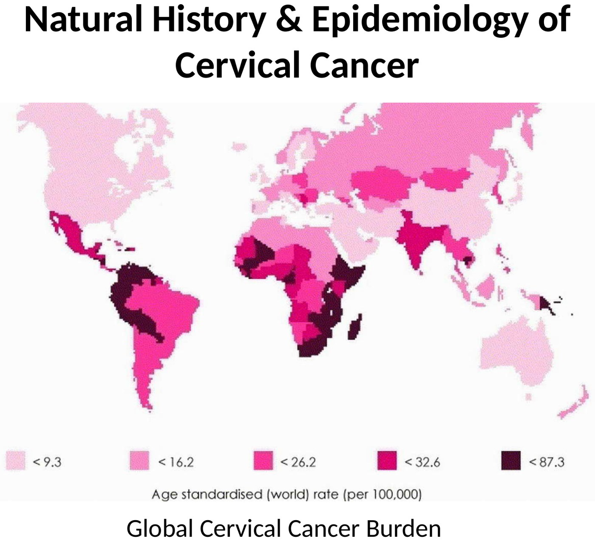
The global picture is very different.| In Canada | Worldwide | |
|---|---|---|
| Most commonly diagnosed cancer | 16th | 4th |
| Cause of cancer death | 17th | 4th |
The global burden is driven by very high rates in economically disadvantaged regions that lack screening programmes and vaccination access. And the Canadian success is not complete: there are still gains to be made in under-screened communities and among people facing barriers to screening — which is the argument self-sampling rests on, at the bottom of this page.
HPV
The types, the risk, the vaccine.
Low Risk vs High Risk
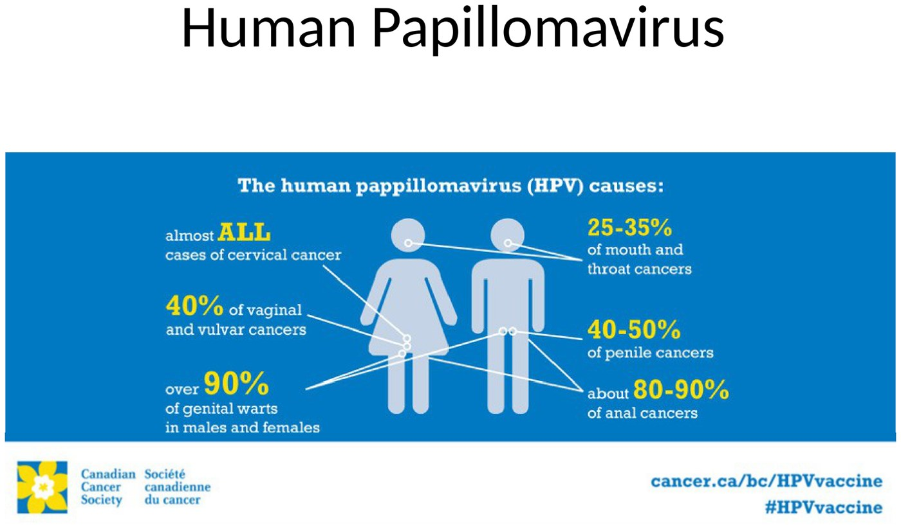
Over 100 types. Cutaneous types infect skin (hand, face warts). Mucosal types are the ones that matter here, split into low risk and high risk.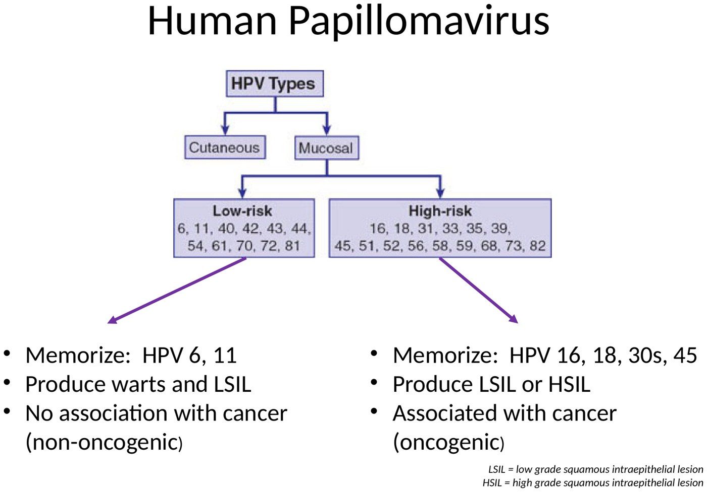
She is normally not a fan of memorisation, and says so — but memorise these.| Low risk: HPV 6, 11 | High risk: HPV 16, 18, 31/33, 45 | |
|---|---|---|
| Produces | Warts and LSIL | LSIL or HSIL |
| Cancer? | No — non-oncogenic | Yes — oncogenic |
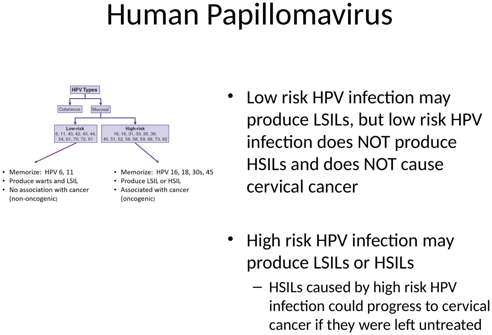
Because both low-risk and high-risk HPV can produce LSIL, seeing "LSIL" on a report does not tell you which type caused it — not unless HPV testing has been done.
But HSIL can only come from high-risk HPV, and HSIL is the lesion that becomes cancer. HSIL is what screening exists to find.
How Common, and Who Is at Risk
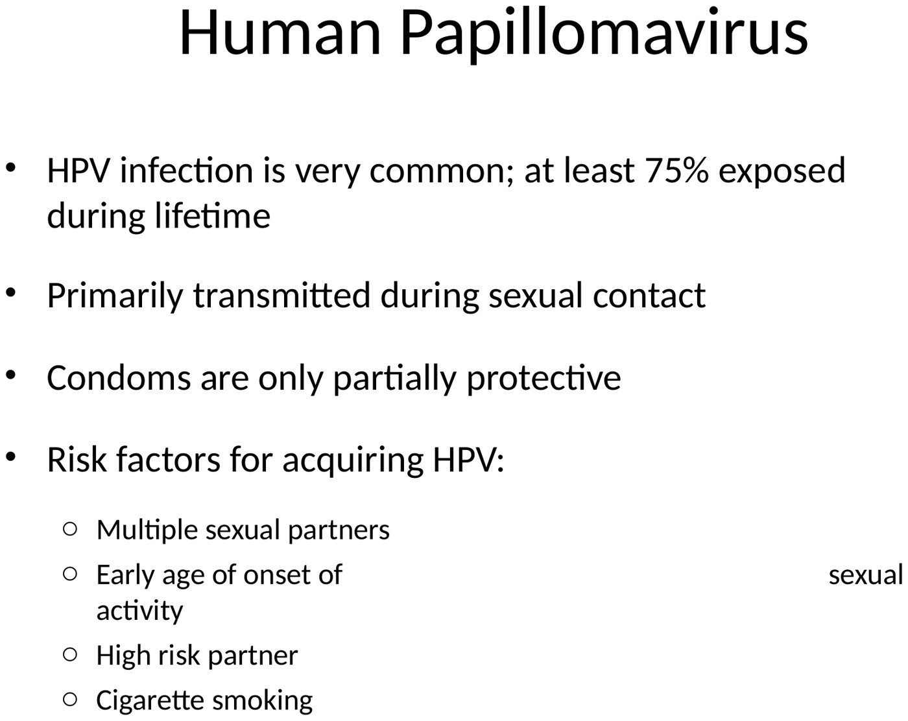
- At least 75% of people are exposed in their lifetime — though this may fall with vaccination.
- Transmitted by sexual contact including intimate skin-to-skin contact. Condoms are only partially protective, because they do not cover all the skin involved.
- Risk factors: multiple partners · early onset of sexual activity · a high-risk partner · cigarette smoking.
The suggested mechanism is that smoking interferes with immune surveillance, so the body is less able to clear an HPV infection.
That gives you something concrete to offer: a patient with persistent SIL who smokes can be counselled to quit, because it may improve her chance of clearing the infection. That is a real, actionable piece of advice — not just generic smoking-cessation boilerplate.
Vaccination
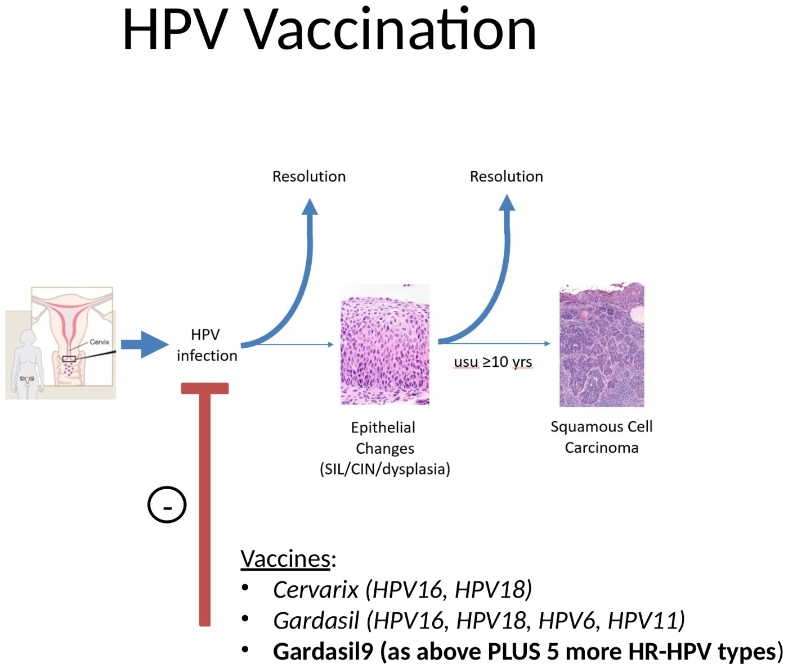
Three vaccines over 20 years. Available in Canada since 2006.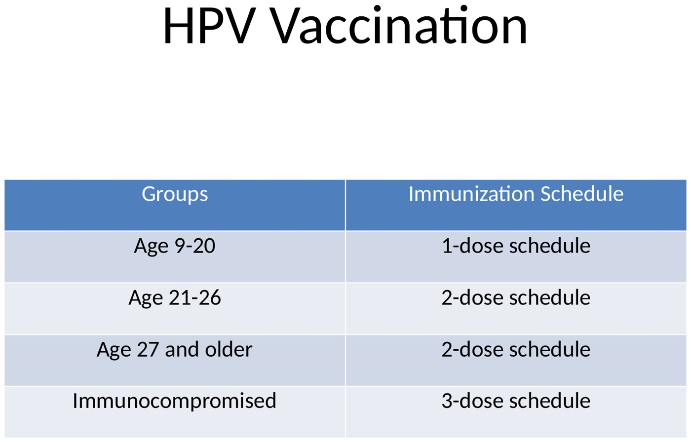
The current schedule.| Vaccine | Covers | Note |
|---|---|---|
| Cervarix | HPV 16, 18 | The two commonest high-risk types — 70% of cervical cancers |
| Gardasil (quadrivalent) | HPV 16, 18 + 6, 11 | Adds the low-risk types responsible for 90% of genital warts |
| Gardasil 9 (nonavalent) | The above + 5 more high-risk types | Available since 2017; the one used in Canada today |
| Group | Schedule |
|---|---|
| Age 9–20 | 1 dose — recently reduced from two |
| Age 21–26 | 2 doses |
| Age 27 and older | 2 doses |
| Immunocompromised, including people living with HIV | 3 doses |
Why grade 7 in Ontario? Two reasons: the risk of previous HPV exposure is low at that age, and preteens mount a better immune response than older teens — independent of exposure. That better response is also why one dose now suffices under 21.
Why vaccinate an adult who's already been exposed, or who has had abnormal cytology? Because there are many HPV types. The vaccine likely covers types that person hasn't met yet. That is where the benefit lies.
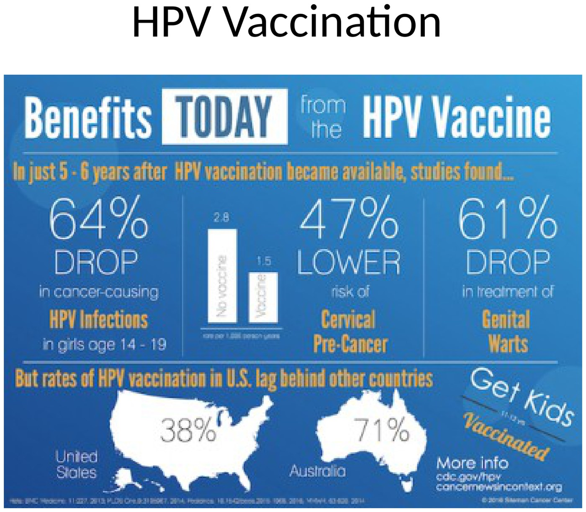
What the data show so far: a drop in oncogenic HPV detection, a drop in cervical pre-cancer (SIL), and a marked drop in genital warts.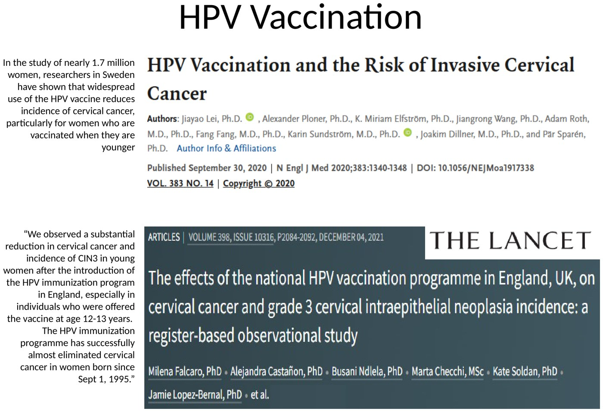
And now, cancer itself. She notes that 6–7 years ago she could not have said this — the progression is so slow that the evidence took time. Two key early studies (2020 and 2021) showed substantial reductions in cervical cancer in vaccinated populations.Vaccinated people are still screened. The vaccine is not perfect and does not cover every high-risk type, so SIL and cancer remain possible. Vaccination does not replace screening.
Doing the Test
Who gets screened, and how not to get your sample rejected.
Eligibility
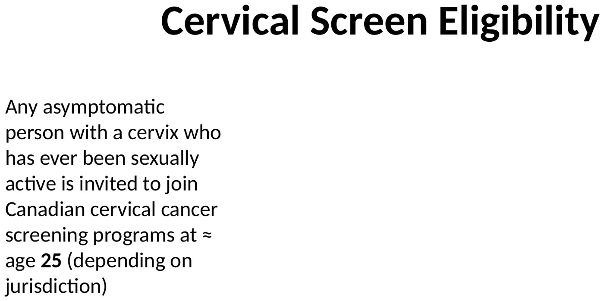
Three conditions, and each one has a reason:
| Criterion | Why |
|---|---|
| Asymptomatic | This is a screening programme. An abnormal-looking cervix or concerning symptoms needs investigation, not a Pap test. Do not let a normal screening result reassure you out of a proper work-up |
| Ever sexually active | HPV is sexually acquired, so there is nothing to find before that |
| Age ~25 (25 in Ontario) | Screening younger does not prevent cancer in that age group — progression is too slow for it to pay off. She notes the age could move later still |
Collection
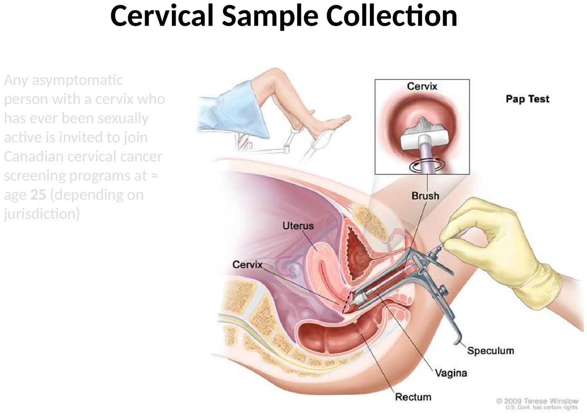
Provider-collected is still the main route: speculum in, cervix visualised, brush or spatula to scrape cells.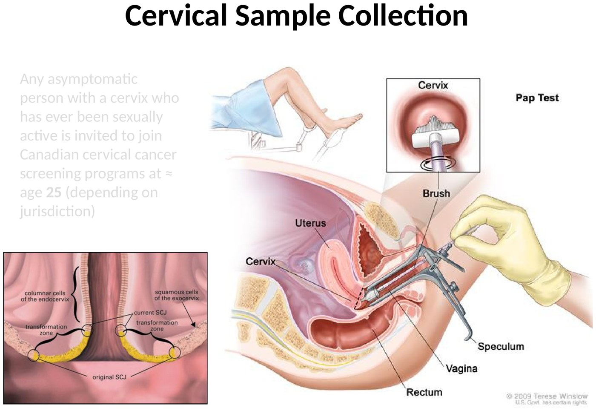
Aim for the transformation zone — where endocervical columnar cells undergo metaplasia into ectocervical squamous cells. It is the commonest site for dysplasia and cancer.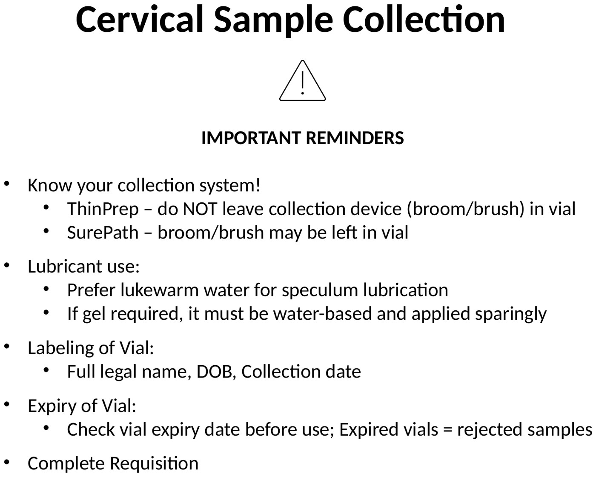
| Reminder | Detail |
|---|---|
| Know your collection system | ThinPrep (used in Ontario): do NOT leave the broom/brush in the vial — the sample will likely be rejected. SurePath: the device may be left in |
| Lubricant | Lukewarm water is preferred. If gel is needed it must be water-based, applied sparingly to the outer blades, avoiding the tip. Lubricant interferes with cellularity and specimen adequacy |
| Labelling | Two identifiers — full legal name and date of birth — plus the collection date |
| Expiry | Check the vial's expiry date before you use it. Expired vial = rejected sample |
| Requisition | Complete it before sending |
Cytology
What the pathologist sees, and the vocabulary of the report.
The Outcomes
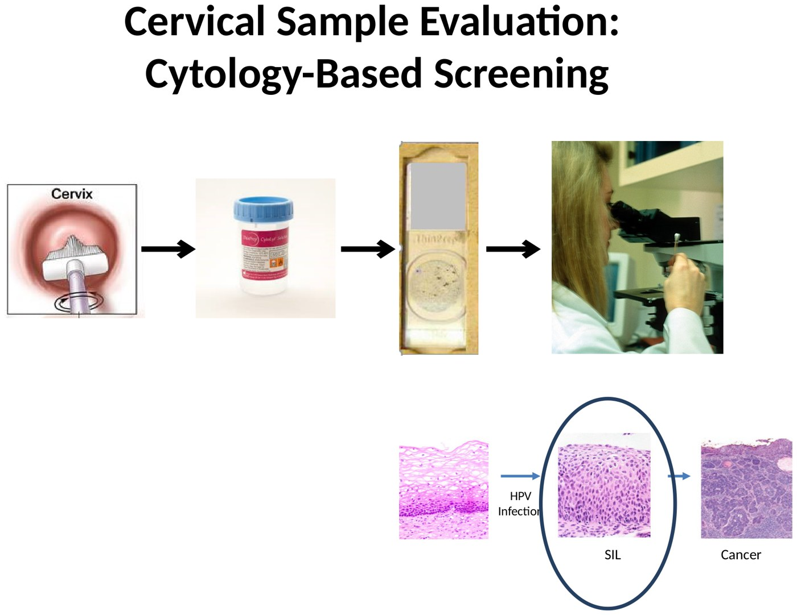
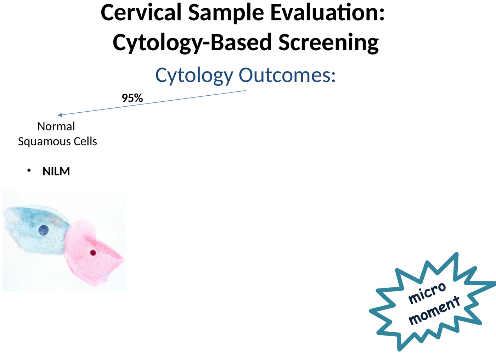
NILM — 95% of screening samples. Negative for intraepithelial lesion or malignancy. Normal mature squamous cells.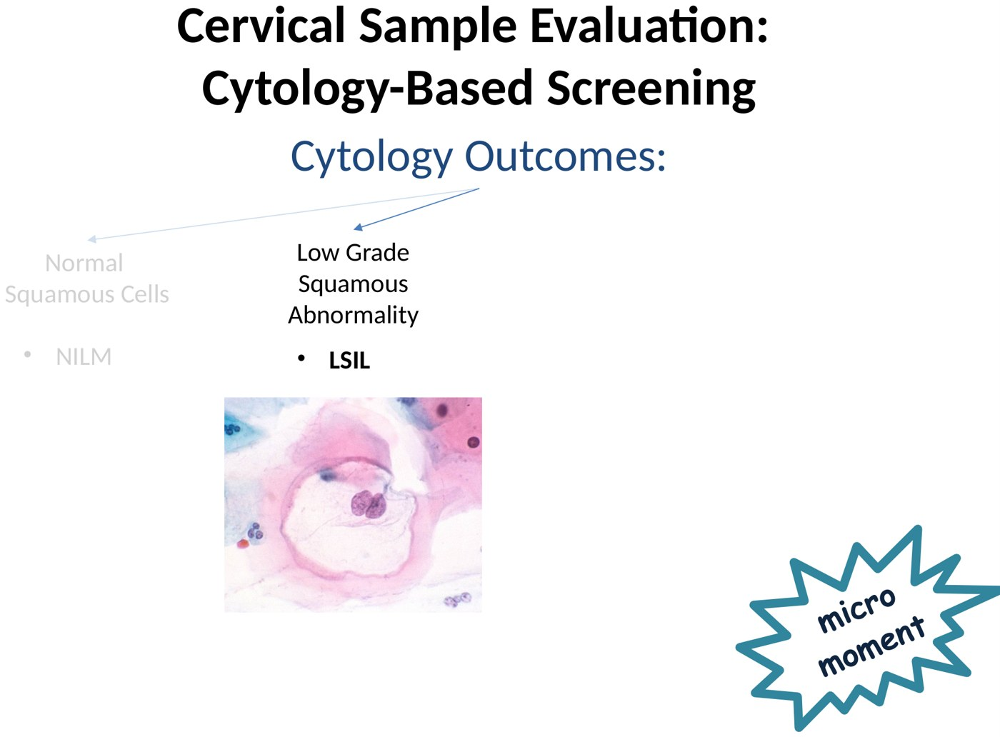
LSIL. The classic cell is a koilocyte — binucleated, with a perinuclear halo.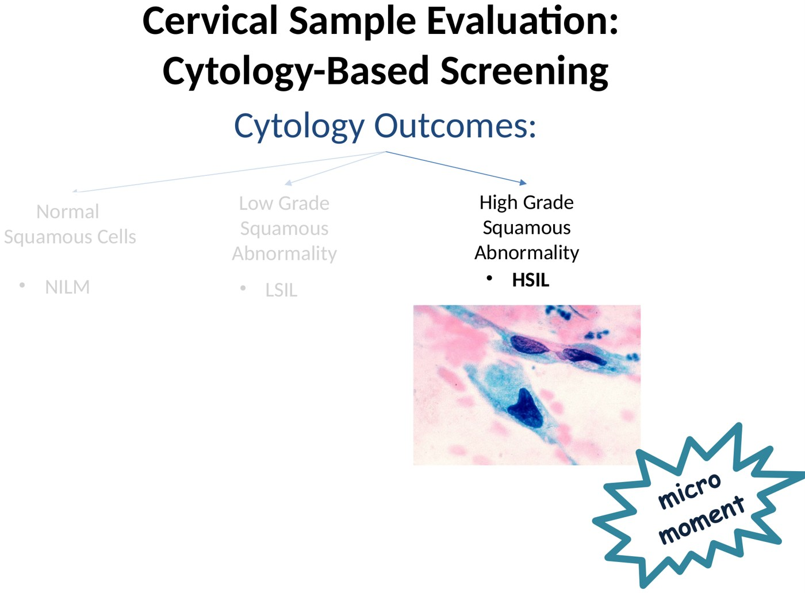
HSIL. Big irregular nuclei, very high nuclear-to-cytoplasmic ratio. This is the lesion screening exists to catch.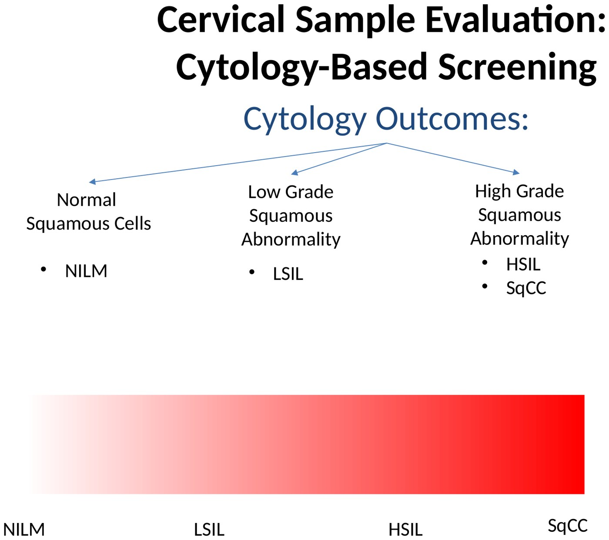
Squamous cell carcinoma. Very uncommon to see on a Pap test.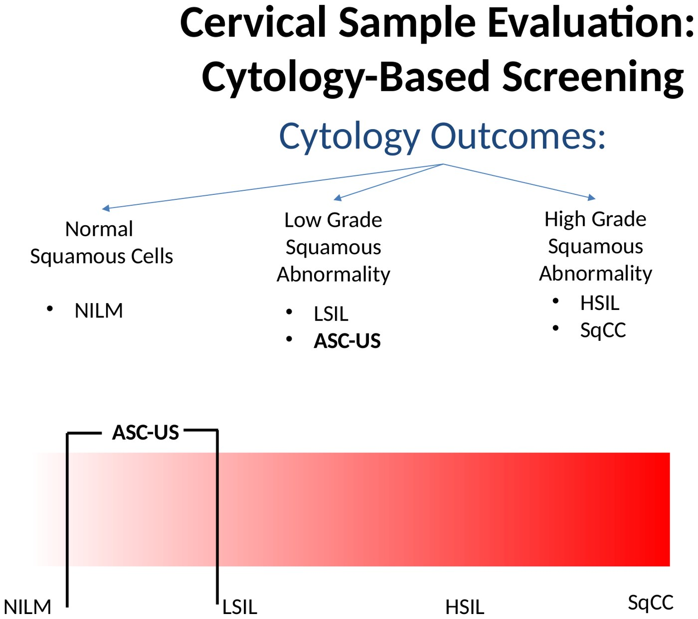
| Result | Means | Clinician treats it as |
|---|---|---|
| NILM | Negative for intraepithelial lesion or malignancy. 95% of samples | Normal |
| LSIL | Low grade squamous intraepithelial lesion | Low grade |
| ASC-US | Atypical squamous cells of undetermined significance. Differential: normal or LSIL | Low grade |
| ASC-H | Atypical squamous cells, cannot exclude a high grade lesion. Differential: normal or HSIL | High grade |
| HSIL | High grade squamous intraepithelial lesion | High grade |
| SqCC | Squamous cell carcinoma | High grade |
They are the pathologist saying "I'm not certain." ASC-US means this might be normal, it might be LSIL. ASC-H means this might be normal, it might be HSIL — and because the downside of missing HSIL is so much worse, ASC-H is managed as a high grade result.
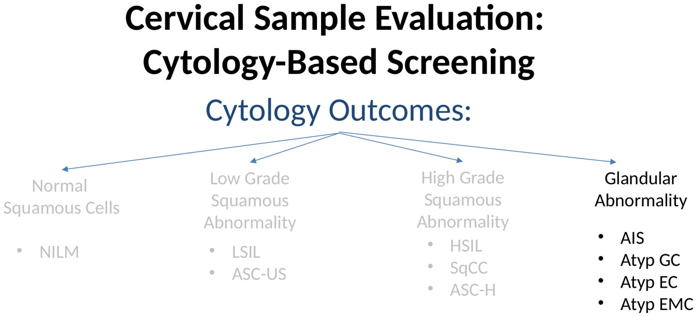
The Pap test is a screening test for squamous abnormalities. It is not a good test for glandular abnormalities — but sometimes they turn up almost by accident, and they are often hard to classify. Terms you may see: AIS (adenocarcinoma in situ), atypical glandular cells, atypical endocervical cells, atypical endometrial cells.
| Cytology result | Management under the old cytology-based programme |
|---|---|
| NILM | Repeat routine screening in 3 years |
| Low grade (LSIL, ASC-US) | Repeat at an interval; if persistent, refer to colposcopy |
| High grade (ASC-H, HSIL, SqCC) | Refer to colposcopy |
| Glandular | Colposcopy, sometimes with endometrial sampling |
The Switch to Primary HPV Screening
Ontario, March 2025. This is the part most likely to be examined.
Why Change Something That Worked?
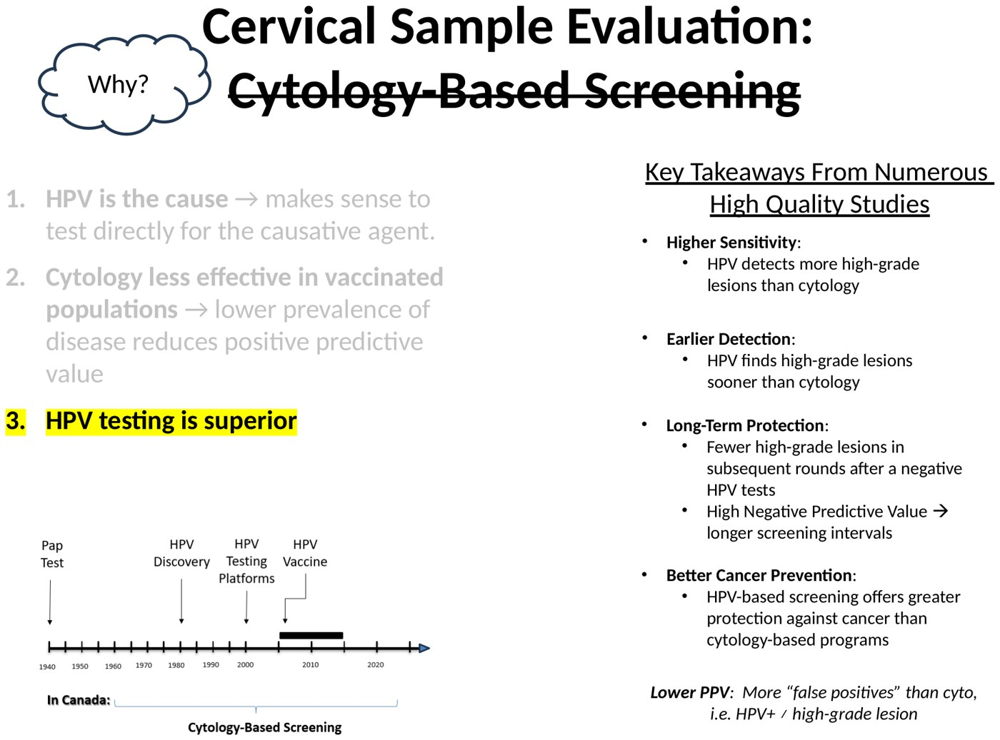
| HPV testing beats cytology on | Meaning |
|---|---|
| Sensitivity | Detects more high-grade lesions |
| Earlier detection | Finds them sooner |
| Long-term protection | After a negative HPV test, far fewer high-grade lesions turn up in later rounds than after a negative cytology |
| Negative predictive value | Very high — which is what justifies the 5-year interval |
| Cancer prevention | Greater protection against cancer overall |
HPV testing has a lower positive predictive value. A positive HPV test does not mean you have a high grade lesion or cancer — there are more "false positives" than with cytology.
So HPV screening has to be paired with a more specific test, and that test is cytology. HPV finds who might have a problem; cytology sorts out who actually does. That is the entire logic of the algorithm below.
The Algorithm
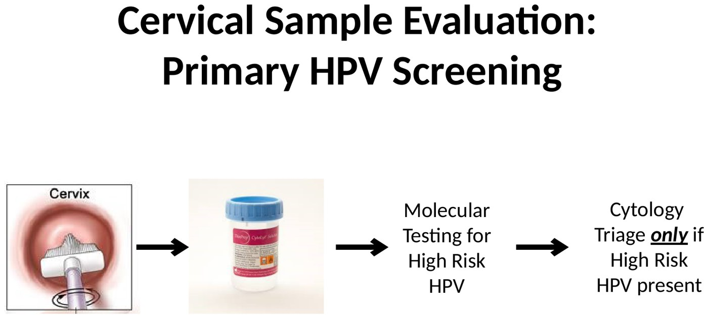
The one-line version. Molecular testing for high-risk HPV first; cytology only as triage, only if high-risk HPV is present.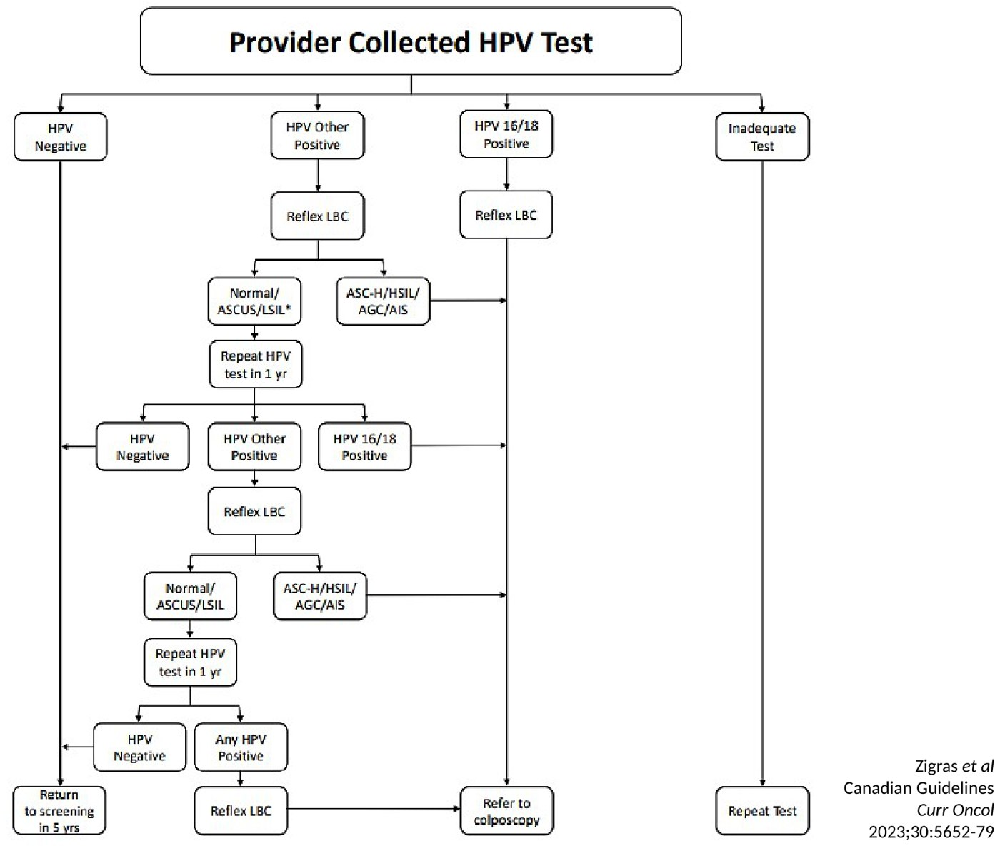
The full pathway, from the Canadian guidelines (Zigras et al., Curr Oncol 2023;30:5652–79). She calls it a confusing diagram, which it is.Ontario switched in March 2025, joining two other provinces; most others have plans to follow. The sample is still collected the same way — it is what the lab does first that changed.
| HPV result | Next step |
|---|---|
| Negative | Return to screening in 5 years |
| Positive for HPV 16 or 18 | Reflex cytology is made up, but she goes to colposcopy regardless of the cytology result — these are the highest-risk of the high-risk types. The cytology is still informative, just not decisive |
| Positive for another high-risk type — reflex cytology shows HSIL, ASC-H or glandular abnormality | Colposcopy |
| Positive for another high-risk type — reflex cytology NILM, ASC-US or LSIL | Repeat HPV testing in 1 year |
| At the 1-year repeat: HPV negative | Return to screening in 5 years |
| At the 1-year repeat: HPV 16/18 positive | Colposcopy |
| At the 1-year repeat: other high-risk type | Reflex cytology again, and the same loop repeats — eventually she either goes to colposcopy or returns to routine screening |
She notes that each jurisdiction will vary this theme, particularly in how it handles high-risk types other than 16 and 18, and that the number of repeat rounds may differ. The shape — HPV first, cytology as triage, 16/18 fast-tracked to colposcopy — is the part to hold onto.
Self-Sampling
The emerging tool, and an honest account of where the evidence sits.
Collecting Your Own Sample
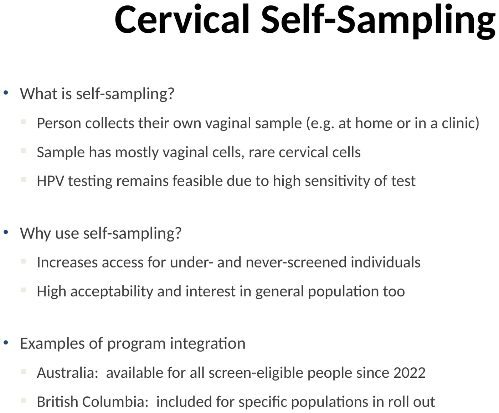
No speculum required. The sample is vaginal, mostly vaginal cells with only rare cervical cells — but HPV testing is sensitive enough that this still works.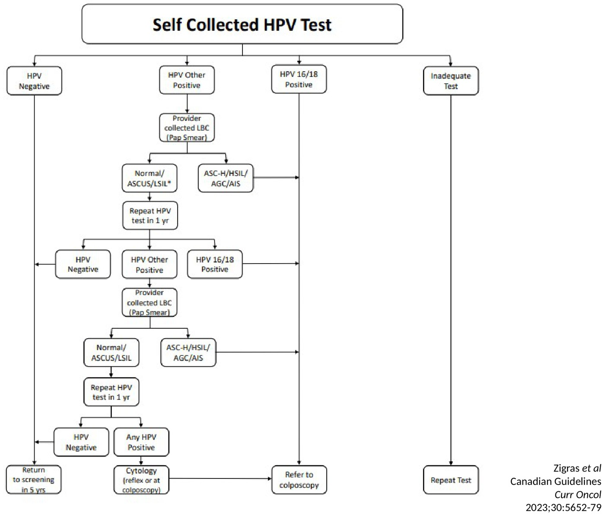
The pathway differs in one important way.| Self-sample result | Next step |
|---|---|
| HPV negative | Routine screening in 5 years — same as provider-collected |
| HPV 16 or 18 positive | Directly to colposcopy. No cytology slide is made — this is a vaginal sample, not a cervical one, so there is no indication for cytology |
| Other high-risk type | She must come back for a provider-collected sample so cytology can be done, and then enters the same loop as above |
- Why do it: it increases access for under-screened and never-screened people — exactly the group where Canada's remaining cervical cancer burden sits. It also has high acceptability in the general population.
- Australia has offered it to all screen-eligible people since 2022. British Columbia included specific populations in its rollout.
Is self-sampling as sensitive as provider sampling? As of 2025, the jury is still out. The doubts are specific:
1. Some of the original data is old. 2. Some meta-analyses showing equivalency may have included people with high viral loads, which would inflate self-collection performance. 3. Some population-based implementation studies have cast doubt.
She expects forthcoming unpublished data to support equivalency, and describes her position as cautious optimism. This is a good example of a lecturer separating what we know from what we expect — worth imitating.
Summary
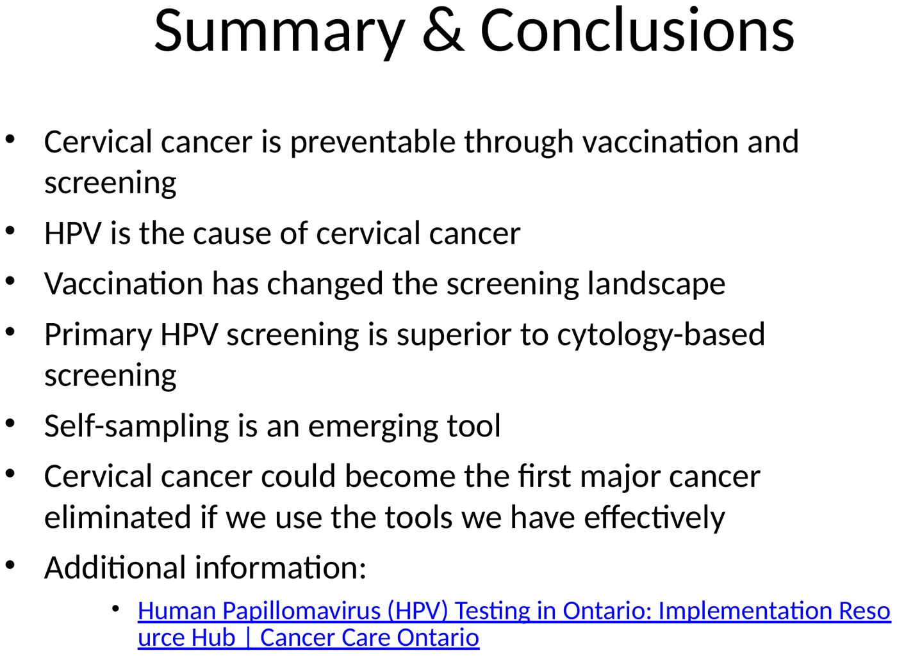
- Cervical cancer is preventable through vaccination and screening.
- HPV is the cause.
- Vaccination changed the screening landscape — and is a major reason for the move to primary HPV screening.
- Primary HPV screening is superior, especially in vaccinated populations.
- Self-sampling is promising but not settled.
- Cervical cancer could become the first major cancer we eliminate — if the tools are actually used.
Her recommended resource: Cancer Care Ontario's HPV Testing Implementation Resource Hub, which is current because Ontario has just made the transition.
Built from Dr. Cady Zeman's "Cervical Cancer Screening" module (39 min, recorded summer 2025): the recorded lecture and its slide deck ("2025 Cervical Screening"). All images are slides from that deck. The algorithm slides are from the Canadian guidelines — Zigras et al., Current Oncology 2023;30:5652–79 — as cited on the slides. This lecture's transcript is cleaner than the others this week but still mangles the core vocabulary (LSIL/HSIL as "L cells"/"H cells," ASC-US as "ask us," ASC-H as "ask age," NILM as "nil," koilocyte as "coiling site," colposcopy as "call post copy" and once "capacity," Cervarix as "the cervix vaccine," nonavalent as "non-covalent," and one line that has the HPV vaccine producing the epithelial changes), so all terminology here is taken from the slides. Because the field is moving fast and the lecturer says so herself, treat anything time-sensitive as of summer 2025. Related pages: 4.6 for genital warts and the rest of HPV's clinical footprint, and 4.7 for the vaccination programme as public health policy.